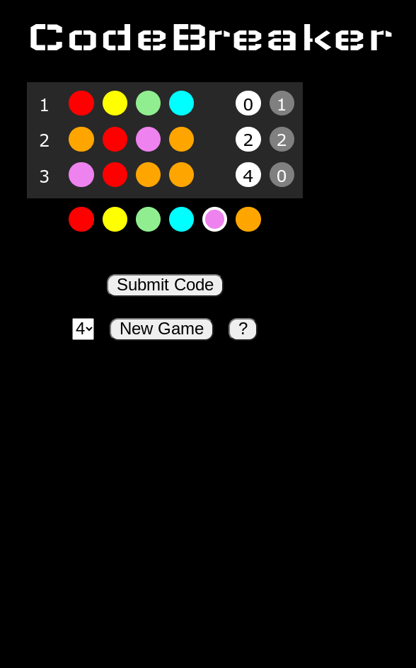

In CodeBreaker you are trying to crack a secret code made up of colors. Every turn
you submit a guess of from 4-6 colors (depending on the game size you are playing),
chosen from a list of 6-10 colors (depending on the game size). For every color you
have in the correct spot you will get a white counter, for every color you have that
is in the code but not in the spot you have it you get a gray counter. Here is an
example came with 4 colors in the code:

CodeBreaker
For guess #1, the 0 in the white circle means there were no colors in the correct spot.
The 1 in the gray circle means one of the colors in our guess is in the code but is not
in the right spot. For guess #2 we got lucky and got 2 colors in the right spot, and 2
in the wrong spot - so now we know all 4 colors in the code. Guess #3 got all 4 of the
colors in the secret code correct!
Notice how colors can repeat in the code - they could even all be the same color!
Good luck, code breaker!